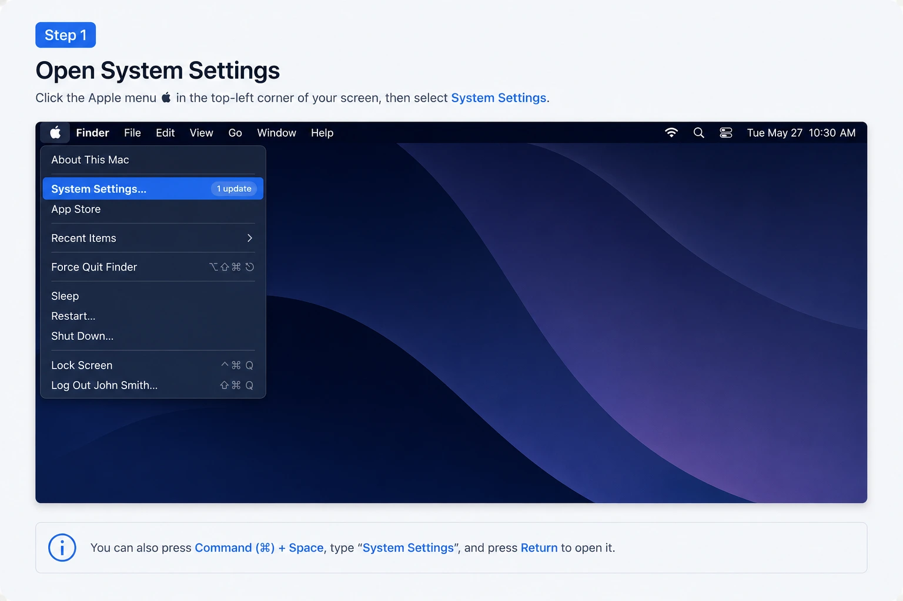
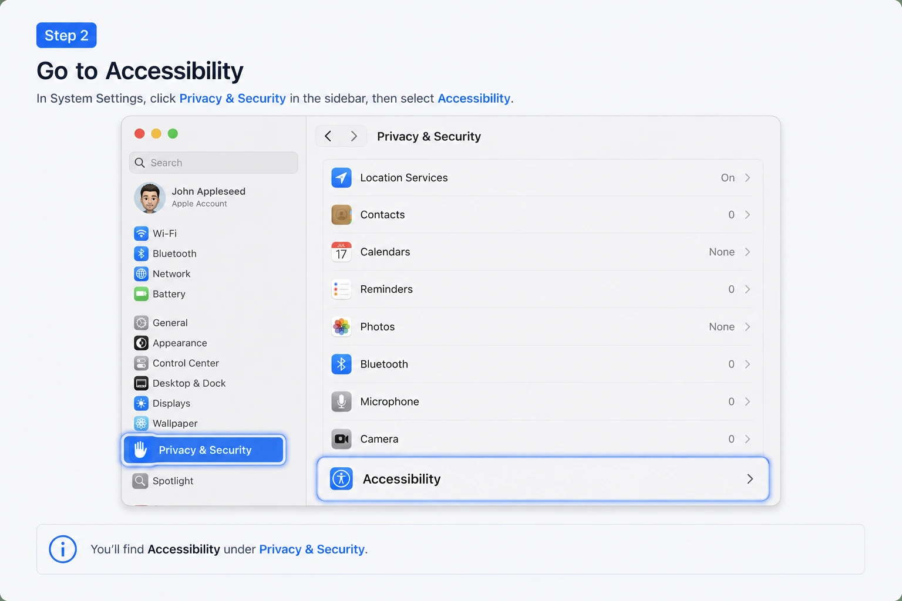
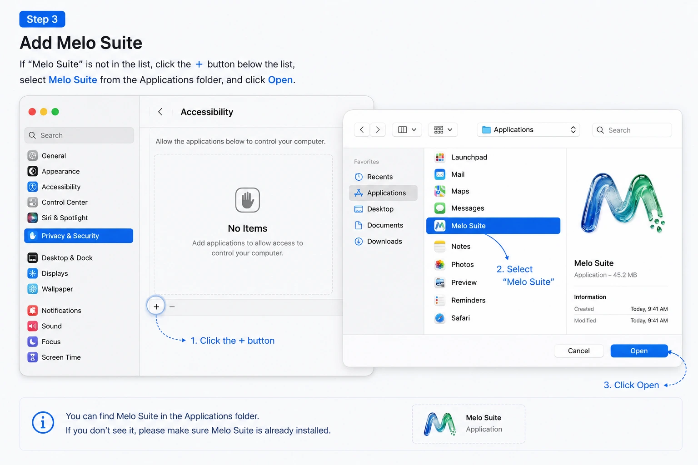
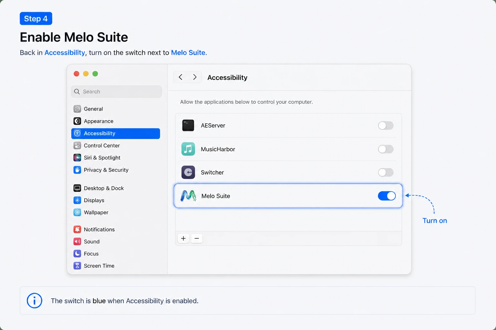
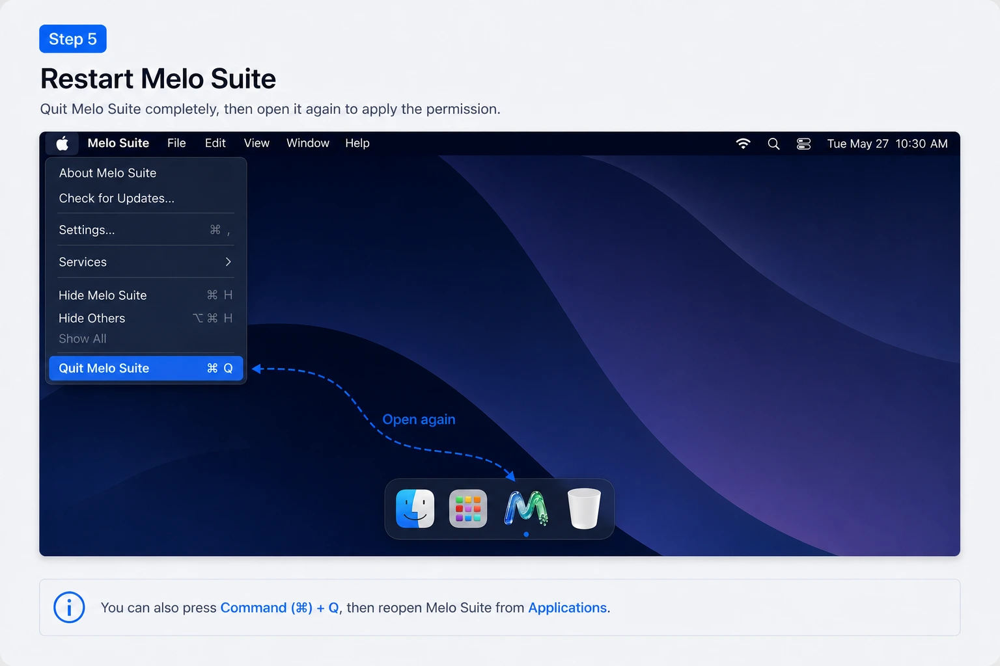

自动粘贴（辅助功能）说明
如何让 Melo 的剪贴板历史一键自动粘贴到其他 app。
什么是自动粘贴？
默认情况下，在 Melo 剪贴板历史里点击某一项，内容会复制到剪贴板，并弹一个简短的提示告诉你按 ⌘+V 粘贴。这种方式在任何 Mac 上都直接可用，不需要任何额外权限。
如果你希望 Melo 直接替你粘贴（不用再按 ⌘+V），就需要授予 Melo 辅助功能权限。由于 Mac App Store 要求应用保持沙盒友好，App Store 版本不会自动向 macOS 注册辅助功能。你需要按照下面的步骤手动把 Melo 添加到辅助功能列表中。
为什么 Apple 要求这样？
辅助功能是 macOS 唯一允许一个 app 向另一个 app 发送按键的权限。Apple 把这视为敏感能力，必须在 系统设置 → 隐私与安全性 → 辅助功能 里逐个 app 授权。
手动为 Melo 开启辅助功能
如果系统设置尚未打开，请点击菜单栏的 Apple 菜单（），选择系统设置。

在左侧边栏找到并点击 隐私与安全性，然后在右侧选择 辅助功能。

点击应用列表下方的 + 按钮。在文件选择器中打开 应用程序 文件夹，选中你正在使用的 Melo 应用（例如 Melo Suite 或 Melo Clip），然后点击 打开。

回到辅助功能列表，确保刚刚添加的 Melo 应用右侧开关处于打开状态。

完全退出 Melo（按 ⌘+Q），然后重新打开。macOS 每次启动 app 都会重新检查辅助功能授权。

打开剪贴板面板，点击任意一条历史记录，Melo 会自动把它粘贴到当前聚焦的 app 中。
常见问题
已经添加了 Melo，但自动粘贴仍然无效
请确认 系统设置 → 隐私与安全性 → 辅助功能 中 Melo 右侧的开关确实已经打开，然后退出并重新启动 Melo。
辅助功能列表里出现了多个 Melo 条目
如果你同时安装了 Melo Suite 和某个单功能 app（例如 Melo Clip），就可能出现这种情况。保留你正在使用的那个 Melo 应用开启即可，也可以把常用的都开启。建议删除旧的重复条目，避免混淆。
应用程序文件夹里找不到 Melo
如果你安装后把 app 移动到了其他位置，请在辅助功能设置中点击 + 按钮，浏览到 Melo 实际所在的位置并选中它。只有正在运行的 app 路径与列表中启用的路径一致时，自动粘贴才能正常工作。
可以不开启辅助功能使用 Melo 吗？
可以。除了自动粘贴之外，其他功能都不需要这个权限。点击剪贴板历史项时，Melo 仍会把内容复制到剪贴板并弹出提示，你可以手动按 ⌘+V 粘贴。
隐私
Melo 使用辅助功能权限仅用于向你当前聚焦的 app 发送粘贴快捷键。我们不会监听其他 app、读取你没有要求粘贴的内容、或收集任何辅助功能数据。完整的数据处理说明见 隐私政策。